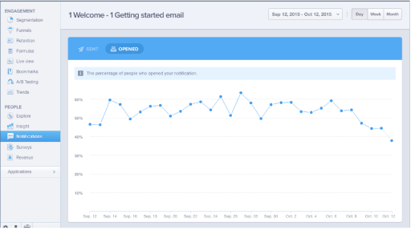

“Almost all developers use more than one tool. Most developers use three to five tools. The more successful developer or publisher you are in mobile the more app analytics solutions you use.” - John Koetsier, MobileBeat 2015
Once you have an understanding of the types of measures you need to track for your particular app vertical, you can decide which tools are the most appropriate to use. Before integrating the analytics SDK into your app, you should consider the available platforms, analysis capabilities, and pricing.
Most developers use more than one tool. Infact, the more successful you are as an app publisher, the more analytics tools you use. According to John Koetsier of VentureBeat, the most successful apps use 3-5 analytics tools.
The most widely used app analytics tool is Google Analytics for Mobile Apps. It integrates with both Google Play and AdMob, allowing you to track conversions and monetize strategically.
Cost: Free
Platforms: Android, iOS, Unity
What it tracks:
More than 600,000 apps have used Flurry to gain user behavior insight. They were acquired by Yahoo in 2014 and also support advertising through banners, video, and interstitial ads.
Cost: Free
Platforms: Android, iOS
What it tracks:
Another popular tool that’s used by the likes of Uber, Spotify, and WordPress is Mixpanel. Unlike most tools Mixpanel is mainly event-based, as the company believes specific actions that are tailored to your unique app provide more valuable insight.
Cost: Freemium
Platforms: Android, iOS
What it tracks:
If you have the budget to pay for an analytics solution, AppSee is a tool that provides unmatched visual insight. It doesn’t use pre-defined events like the other tools, but records all actions taken by a user. It also provides heat maps, allowing you to to evaluate how engaged a user is with each screen by tracking where they swipe, tap, or pinch.
Cost: Freemium
Platforms: Android, iOS
What it tracks:
In addition to providing app analytics, Localytics offers targeted messaging which is a great tool to drive engagement. It uses gathered insights to help you send personalized messages to users at the right time.
Cost: Freemium
Platforms: Android, iOS, Unity, Windows
What it tracks: